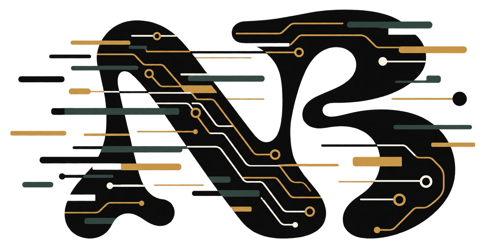

Nicolas Berredo · Hardware Engineering
Turning possibility into prototypes.
A portfolio of hardware, embedded systems, software, and the experiments that connect them.
Explore selected work
Precision / curiosity / momentum
Selected work
Research, hardware, and software.
Projects, prototypes, and analyses.
NB
Approach
The good stuff happens where technical rigor meets a clear point of view.
I like the full arc: asking the right question, making the first version tangible, and refining until the details hold up. My résumé has the formal version; this site is a quicker way into the work.
Read résuméNew conversations